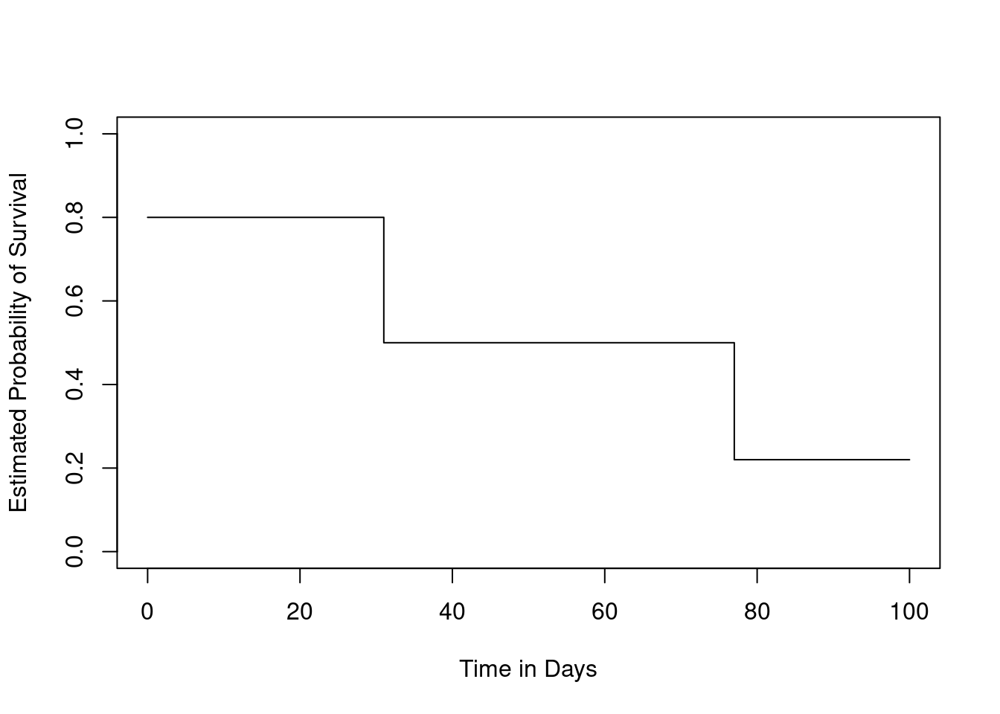
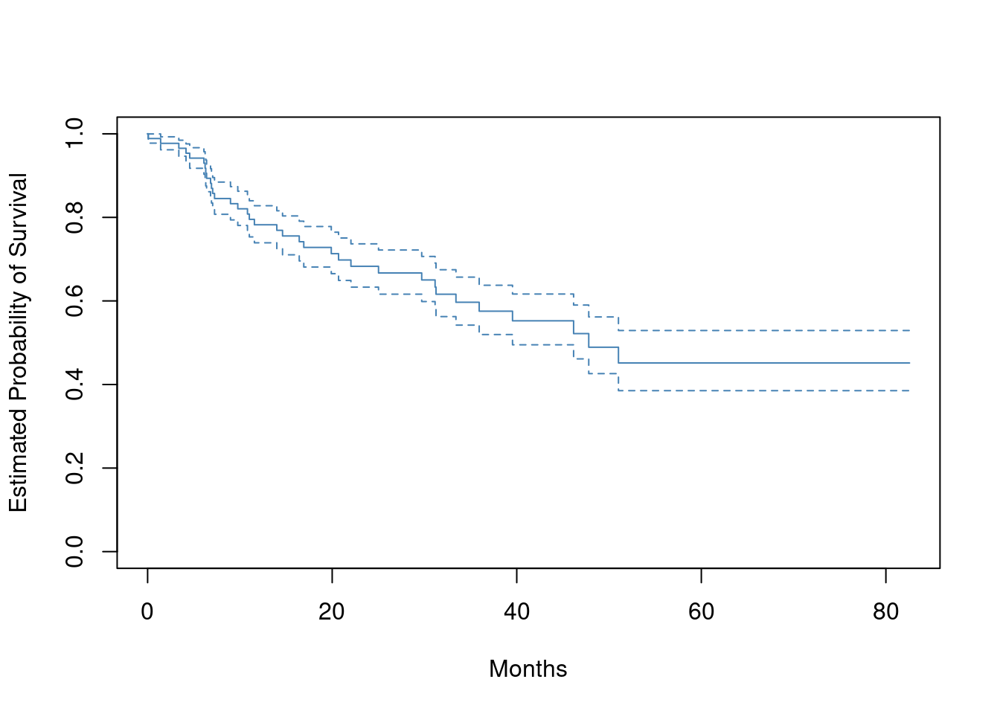
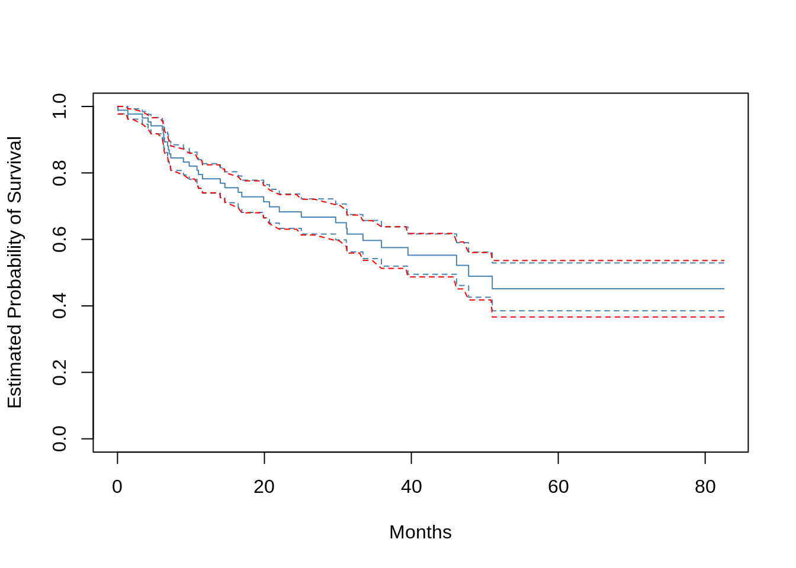
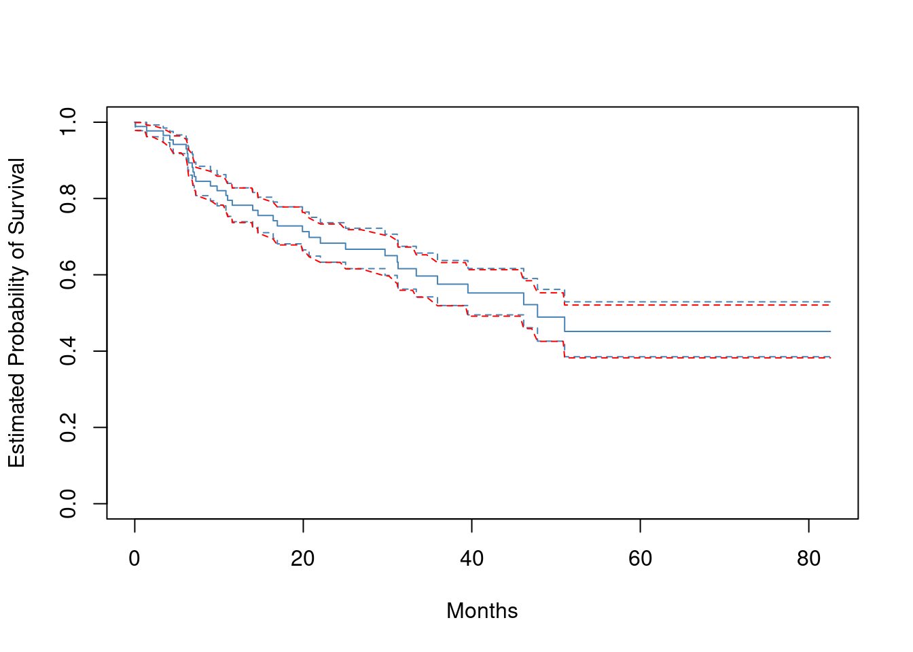
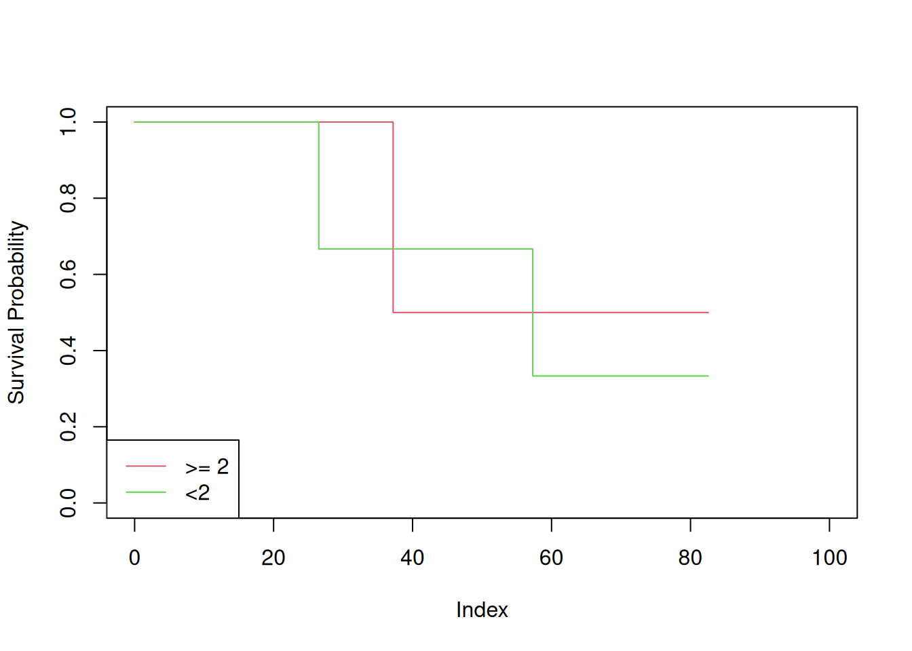

11 Survival Analysis and Censored Data
11.1 Conceptual
11.1.1 Question 1
For each example, state whether or not the censoring mechanism is independent. Justify your answer.
- In a study of disease relapse, due to a careless research scientist, all patients whose phone numbers begin with the number “2” are lost to follow up.
Independent. There’s no reason to think disease relapse should be related to the first digit of a phone number.
- In a study of longevity, a formatting error causes all patient ages that exceed 99 years to be lost (i.e. we know that those patients are more than 99 years old, but we do not know their exact ages).
Not independent. Older patients are more likely to see an event that younger.
- Hospital A conducts a study of longevity. However, very sick patients tend to be transferred to Hospital B, and are lost to follow up.
Not independent. Sick patients are more likely to see an event that healthy.
- In a study of unemployment duration, the people who find work earlier are less motivated to stay in touch with study investigators, and therefore are more likely to be lost to follow up.
Not independent. More employable individuals are more likely to see an event.
- In a study of pregnancy duration, women who deliver their babies pre-term are more likely to do so away from their usual hospital, and thus are more likely to be censored, relative to women who deliver full-term babies.
Not independent. Delivery away from hospital will be associated with pregnancy duration.
- A researcher wishes to model the number of years of education of the residents of a small town. Residents who enroll in college out of town are more likely to be lost to follow up, and are also more likely to attend graduate school, relative to those who attend college in town.
Not independent. Years of education will be associated with enrolling in out of town colleges.
- Researchers conduct a study of disease-free survival (i.e. time until disease relapse following treatment). Patients who have not relapsed within five years are considered to be cured, and thus their survival time is censored at five years.
In other words we assume all events happen within five years, so censoring after this time is equivalent to not censoring at all so the censoring is independent.
- We wish to model the failure time for some electrical component. This component can be manufactured in Iowa or in Pittsburgh, with no difference in quality. The Iowa factory opened five years ago, and so components manufactured in Iowa are censored at five years. The Pittsburgh factory opened two years ago, so those components are censored at two years.
If there is no difference in quality then location and therefore censoring is independent of failure time.
- We wish to model the failure time of an electrical component made in two different factories, one of which opened before the other. We have reason to believe that the components manufactured in the factory that opened earlier are of higher quality.
In this case, the difference in opening times of the two locations will mean that any difference in quality between locations will be associated with censoring, so censoring is not independent.
11.1.2 Question 2
We conduct a study with \(n = 4\) participants who have just purchased cell phones, in order to model the time until phone replacement. The first participant replaces her phone after 1.2 years. The second participant still has not replaced her phone at the end of the two-year study period. The third participant changes her phone number and is lost to follow up (but has not yet replaced her phone) 1.5 years into the study. The fourth participant replaces her phone after 0.2 years.
For each of the four participants (\(i = 1,..., 4\)), answer the following questions using the notation introduced in Section 11.1:
- Is the participant’s cell phone replacement time censored?
No, Yes, Yes and No. Censoring occurs when we do not know if or when the phone was replaced.
- Is the value of \(c_i\) known, and if so, then what is it?
\(c_i\) is censoring time. For the four participants these are: NA. 2. 1.5 and NA.
- Is the value of \(t_i\) known, and if so, then what is it?
\(t_i\) is time to event. For the four participants these are: 1.2, NA, NA and 0.2.
- Is the value of \(y_i\) known, and if so, then what is it?
\(y_i\) is the observed time. For the four participants these are: 1.2, 2, 1.5 and 0.2.
- Is the value of \(\delta_i\) known, and if so, then what is it?
\(\delta_i\) is an indicator for censoring. The nomenclature introduced here defines this to be 1 if we observe the true “survival” time and 0 if we observe the censored time. Therefore, for these participants, the values are: 1, 0, 0 and 1.
11.1.3 Question 3
For the example in Exercise 2, report the values of \(K\), \(d_1,...,d_K\), \(r_1,...,r_K\), and \(q_1,...,q_K\), where this notation was defined in Section 11.3.
- \(K\) is the number of unique deaths, which is 2.
- \(d_k\) represents the unique death times, which are: 0.2, 1.2.
- \(r_k\) denotes the number of patients alive and in the study just before \(d_k\). Note the first event is for patient 4, then patient 1, then patient 3 is censored and finally the study ends with patient 2 still involved. Therefore \(r_k\) takes values are: 4, 3.
- \(q_k\) denotes the number of patients who died at time \(d_k\), therefore this takes values: 1, 1.
We can check by using the survival package.
library(survival)
x <- Surv(c(1.2, 2, 1.5, 0.2), event = c(1, 0, 0, 1))
summary(survfit(x ~ 1))## Call: survfit(formula = x ~ 1)
##
## time n.risk n.event survival std.err lower 95% CI upper 95% CI
## 0.2 4 1 0.75 0.217 0.426 1
## 1.2 3 1 0.50 0.250 0.188 111.1.4 Question 4
This problem makes use of the Kaplan-Meier survival curve displayed in Figure 11.9. The raw data that went into plotting this survival curve is given in Table 11.4. The covariate column of that table is not needed for this problem.
- What is the estimated probability of survival past 50 days?
There are 2 events that happen before 50 days. The number at risk \(r_k\) are 5 and 4 (one was censored early on), thus survival probability is \(4/5 * 3/4 = 0.6\).
Equivalently, we can use the survival package.
library(tidyverse)table_data <- tribble(
~Y, ~D, ~X,
26.5, 1, 0.1,
37.2, 1, 11,
57.3, 1, -0.3,
90.8, 0, 2.8,
20.2, 0, 1.8,
89.8, 0, 0.4
)
x <- Surv(table_data$Y, table_data$D)
summary(survfit(x ~ 1))## Call: survfit(formula = x ~ 1)
##
## time n.risk n.event survival std.err lower 95% CI upper 95% CI
## 26.5 5 1 0.8 0.179 0.516 1
## 37.2 4 1 0.6 0.219 0.293 1
## 57.3 3 1 0.4 0.219 0.137 1
- Write out an analytical expression for the estimated survival function. For instance, your answer might be something along the lines of
\[ \hat{S}(t) = \begin{cases} 0.8 & \text{if } t < 31\\ 0.5 & \text{if } 31 \le t < 77\\ 0.22 & \text{if } 77 \le t \end{cases} \]
(The previous equation is for illustration only: it is not the correct answer!)
\[ \hat{S}(t) = \begin{cases} 1 & \text{if } t < 26.5 \\ 0.8 & \text{if } 26.5 \le t < 37.2 \\ 0.6 & \text{if } 37.2 \le t < 57.3 \\ 0.4 & \text{if } 57.3 \le t \end{cases} \]
11.1.5 Question 5
Sketch the survival function given by the equation
\[ \hat{S}(t) = \begin{cases} 0.8, & \text{if } t < 31\\ 0.5, & \text{if } 31 \le t < 77\\ 0.22 & \text{if } 77 \le t \end{cases} \]
Your answer should look something like Figure 11.9.
We can draw this plot, or even engineer data that will generate the required plot…
plot(NULL,
xlim = c(0, 100),
ylim = c(0, 1),
ylab = "Estimated Probability of Survival",
xlab = "Time in Days"
)
lines(
c(0, 31, 31, 77, 77, 100),
c(0.8, 0.8, 0.5, 0.5, 0.22, 0.22)
)
11.1.6 Question 6
This problem makes use of the data displayed in Figure 11.1. In completing this problem, you can refer to the observation times as \(y_1,...,y_4\). The ordering of these observation times can be seen from Figure 11.1; their exact values are not required.
- Report the values of \(\delta_1,...,\delta_4\), \(K\), \(d_1,...,d_K\), \(r_1,...,r_K\), and \(q_1,...,q_K\). The relevant notation is defined in Sections 11.1 and 11.3.
- \(\delta\) values are: 1, 0, 1, 0.
- \(K\) is 2
- \(d\) values are \(y_3\) and \(y_1\).
- \(r\) values are 4 and 2.
- \(q\) values are 1 and 1.
- Sketch the Kaplan-Meier survival curve corresponding to this data set. (You do not need to use any software to do this—you can sketch it by hand using the results obtained in (a).)
plot(NULL,
xlim = c(0, 350),
ylim = c(0, 1),
ylab = "Estimated Probability of Survival",
xlab = "Time in Days"
)
lines(
c(0, 150, 150, 300, 300, 350),
c(1, 1, 0.75, 0.75, 0.375, 0.375)
)
x <- Surv(c(300, 350, 150, 250), c(1, 0, 1, 0))
- Based on the survival curve estimated in (b), what is the probability that the event occurs within 200 days? What is the probability that the event does not occur within 310 days?
0.25 and 0.375.
- Write out an expression for the estimated survival curve from (b).
\[ \hat{S}(t) = \begin{cases} 1 & \text{if } t < y_3 \\ 0.75 & \text{if } y_3 \le t < y_1 \\ 0.375 & \text{if } y_1 \le t \end{cases} \]
11.1.7 Question 7
In this problem, we will derive (11.5) and (11.6), which are needed for the construction of the log-rank test statistic (11.8). Recall the notation in Table 11.1.
- Assume that there is no difference between the survival functions of the two groups. Then we can think of \(q_{1k}\) as the number of failures if we draw $r_{1k} observations, without replacement, from a risk set of \(r_k\) observations that contains a total of \(q_k\) failures. Argue that \(q_{1k}\) follows a hypergeometric distribution. Write the parameters of this distribution in terms of \(r_{1k}\), \(r_k\), and \(q_k\).
A hypergeometric distributions models sampling without replacement from a finite pool where each sample is a success or failure. This fits the situation here, where with have a finite number of samples in the risk set.
The hypergeometric distribution is parameterized as \(k\) successes in \(n\) draws, without replacement, from a population of size \(N\) with \(K\) objects with that feature.
Mapping to our situation, \(q_{1k}\) is \(k\), \(r_{1k}\) is \(n\), \(r_k\) is \(N\) and \(q_k\) is \(K\).
- Given your previous answer, and the properties of the hypergeometric distribution, what are the mean and variance of \(q_{1k}\)? Compare your answer to (11.5) and (11.6).
With the above parameterization, the mean (\(n K/N\)) is \(r_{1k} q_k/r_K\). The variance \(n K/N (N-K)/N (N-n)/(N-1)\) is
\[ r_{1k} \frac{q_k}{r_k} \frac{r_k-q_k}{r_k} \frac{r_k - r_{1k}}{r_k - 1} \]
These are equivalent to 11.5 and 11.6.
11.1.8 Question 8
Recall that the survival function \(S(t)\), the hazard function \(h(t)\), and the density function \(f(t)\) are defined in (11.2), (11.9), and (11.11), respectively. Furthermore, define \(F(t) = 1 − S(t)\). Show that the following relationships hold:
\[ f(t) = dF(t)/dt \\ S(t) = \exp\left(-\int_0^t h(u)du\right) \]
If \(F(t) = 1 - S(t)\), then \(F(t)\) is the cumulative density function (cdf) for \(t\).
For a continuous distribution, a cdf, e.g. \(F(t)\) can be expressed as an integral (up to some value \(x\)) of the probability density function (pdf), i.e. \(F(t) = \int_{-\infty}^x f(x) dt\). Equivalently, the derivative of the cdf is its pdf: \(f(t) = \frac{d F(t)}{dt}\).
Then, \(h(t) = \frac{f(t)}{S(t)} = \frac{dF(t)/dt}{S(t)} = \frac{-dS(t)/dt}{S(t)}\). From basic calculus, this can be rewritten as \(h(t) = -\frac{d}{dt}\log{S(t)}\). Integrating and then exponentiating we get the second identity.
11.1.9 Question 9
In this exercise, we will explore the consequences of assuming that the survival times follow an exponential distribution.
- Suppose that a survival time follows an \(Exp(\lambda)\) distribution, so that its density function is \(f(t) = \lambda\exp(−\lambda t)\). Using the relationships provided in Exercise 8, show that \(S(t) = \exp(-\lambda t)\).
The cdf of an exponential distribution is \(1 - \exp(-\lambda x)\) and \(S(t)\) is \(1 - F(t)\) where \(F(t)\) is the cdf.
Hence, \(S(t) = \exp(-\lambda t)\).
- Now suppose that each of \(n\) independent survival times follows an \(\exp(\lambda)\) distribution. Write out an expression for the likelihood function (11.13).
The reference to (11.13) gives us the following formula:
\[ L = \prod_{i=1}^{n} h(y_i)^{\delta_i} S(y_i) \]
(11.10) also gives us
\[ h(t) = \frac{f(t)}{S(t)} \]
Plugging in the expressions from part (a), we get
\[\begin{align*} h(t) &= \frac{\lambda \exp(- \lambda t)}{\exp(- \lambda t)} \\ &= \lambda \end{align*}\]
Using (11.13), we get the following loss expression:
\[ \ell = \prod_i \lambda^{\delta_i} e^{- \lambda y_i} \]
- Show that the maximum likelihood estimator for \(\lambda\) is \[ \hat\lambda = \sum_{i=1}^n \delta_i / \sum_{i=1}^n y_i. \]
Take the log likelihood.
\[\begin{align*} \log \ell &= \sum_i \log \left( \lambda^{\delta_i} e^{- \lambda y_i} \right) \\ &= \sum_i{\delta_i\log\lambda - \lambda y_i \log e} \\ &= \sum_i{\delta_i\log\lambda - \lambda y_i} \\ &= \log\lambda\sum_i{\delta_i} - \lambda\sum_i{y_i} \end{align*}\]
Differentiating this expression with respect to \(\lambda\) we get:
\[ \frac{d \log \ell}{d \lambda} = \frac{\sum_i{\delta_i}}{\lambda} - \sum_i{y_i} \]
This function maximises when its gradient is 0. Solving for this gives a MLE of \(\hat\lambda = \sum_{i=1}^n \delta_i / \sum_{i=1}^n y_i\).
- Use your answer to (c) to derive an estimator of the mean survival time.
Hint: For (d), recall that the mean of an \(Exp(\lambda)\) random variable is \(1/\lambda\).
Estimated mean survival would be \(1/\lambda\) which given the above would be \(\sum_{i=1}^n y_i / \sum_{i=1}^n \delta_i\), which can be thought of as the total observation time over the total number of deaths.
11.2 Applied
11.2.1 Question 10
This exercise focuses on the brain tumor data, which is included in the
ISLR2Rlibrary.
- Plot the Kaplan-Meier survival curve with ±1 standard error bands, using the
survfit()function in thesurvivalpackage.
library(ISLR2)
x <- Surv(BrainCancer$time, BrainCancer$status)
plot(survfit(x ~ 1),
xlab = "Months",
ylab = "Estimated Probability of Survival",
col = "steelblue",
conf.int = 0.67
)
- Draw a bootstrap sample of size \(n = 88\) from the pairs (\(y_i\), \(\delta_i\)), and compute the resulting Kaplan-Meier survival curve. Repeat this process \(B = 200\) times. Use the results to obtain an estimate of the standard error of the Kaplan-Meier survival curve at each timepoint. Compare this to the standard errors obtained in (a).
plot(survfit(x ~ 1),
xlab = "Months",
ylab = "Estimated Probability of Survival",
col = "steelblue",
conf.int = 0.67
)
fit <- survfit(x ~ 1)
dat <- tibble(time = c(0, fit$time))
for (i in 1:200) {
y <- survfit(sample(x, 88, replace = TRUE) ~ 1)
y <- tibble(time = c(0, y$time), "s{i}" := c(1, y$surv))
dat <- left_join(dat, y, by = "time")
}
res <- fill(dat, starts_with("s")) |>
rowwise() |>
transmute(sd = sd(c_across(starts_with("s"))))
se <- res$sd[2:nrow(res)]
lines(fit$time, fit$surv - se, lty = 2, col = "red")
lines(fit$time, fit$surv + se, lty = 2, col = "red")
- Fit a Cox proportional hazards model that uses all of the predictors to predict survival. Summarize the main findings.
fit <- coxph(Surv(time, status) ~ sex + diagnosis + loc + ki + gtv + stereo, data = BrainCancer)
fit## Call:
## coxph(formula = Surv(time, status) ~ sex + diagnosis + loc +
## ki + gtv + stereo, data = BrainCancer)
##
## coef exp(coef) se(coef) z p
## sexMale 0.18375 1.20171 0.36036 0.510 0.61012
## diagnosisLG glioma 0.91502 2.49683 0.63816 1.434 0.15161
## diagnosisHG glioma 2.15457 8.62414 0.45052 4.782 1.73e-06
## diagnosisOther 0.88570 2.42467 0.65787 1.346 0.17821
## locSupratentorial 0.44119 1.55456 0.70367 0.627 0.53066
## ki -0.05496 0.94653 0.01831 -3.001 0.00269
## gtv 0.03429 1.03489 0.02233 1.536 0.12466
## stereoSRT 0.17778 1.19456 0.60158 0.296 0.76760
##
## Likelihood ratio test=41.37 on 8 df, p=1.776e-06
## n= 87, number of events= 35
## (1 observation deleted due to missingness)diagnosisHG and ki are highly significant.
- Stratify the data by the value of
ki. (Since only one observation haski=40, you can group that observation together with the observations that haveki=60.) Plot Kaplan-Meier survival curves for each of the five strata, adjusted for the other predictors.
To adjust for other predictors, we fit a model that includes those predictors
and use this model to predict new, artificial, data where we allow ki to
take each possible value, but set the other predictors to be the mode or mean
of the other predictors.
library(ggfortify)
modaldata <- data.frame(
sex = rep("Female", 5),
diagnosis = rep("Meningioma", 5),
loc = rep("Supratentorial", 5),
ki = c(60, 70, 80, 90, 100),
gtv = rep(mean(BrainCancer$gtv), 5),
stereo = rep("SRT", 5)
)
survplots <- survfit(fit, newdata = modaldata)
plot(survplots, xlab = "Months", ylab = "Survival Probability", col = 2:6)
legend("bottomleft", c("60", "70", "80", "90", "100"), col = 2:6, lty = 1)11.2.2 Question 11
This example makes use of the data in Table 11.4.
- Create two groups of observations. In Group 1, \(X < 2\), whereas in Group 2, \(X \ge 2\). Plot the Kaplan-Meier survival curves corresponding to the two groups. Be sure to label the curves so that it is clear which curve corresponds to which group. By eye, does there appear to be a difference between the two groups’ survival curves?
x <- split(Surv(table_data$Y, table_data$D), table_data$X < 2)
plot(NULL, xlim = c(0, 100), ylim = c(0, 1), ylab = "Survival Probability")
lines(survfit(x[[1]] ~ 1), conf.int = FALSE, col = 2)
lines(survfit(x[[2]] ~ 1), conf.int = FALSE, col = 3)
legend("bottomleft", c(">= 2", "<2"), col = 2:3, lty = 1)
There does not appear to be any difference between the curves.
- Fit Cox’s proportional hazards model, using the group indicator as a covariate. What is the estimated coefficient? Write a sentence providing the interpretation of this coefficient, in terms of the hazard or the instantaneous probability of the event. Is there evidence that the true coefficient value is non-zero?
fit <- coxph(Surv(Y, D) ~ X < 2, data = table_data)
fit## Call:
## coxph(formula = Surv(Y, D) ~ X < 2, data = table_data)
##
## coef exp(coef) se(coef) z p
## X < 2TRUE 0.3401 1.4051 1.2359 0.275 0.783
##
## Likelihood ratio test=0.08 on 1 df, p=0.7797
## n= 6, number of events= 3The coefficient is \(0.3401\). This implies a slightly increased hazard when \(X < 2\) but it is not significantly different to zero (P = 0.8).
- Recall from Section 11.5.2 that in the case of a single binary covariate, the log-rank test statistic should be identical to the score statistic for the Cox model. Conduct a log-rank test to determine whether there is a difference between the survival curves for the two groups. How does the p-value for the log-rank test statistic compare to the \(p\)-value for the score statistic for the Cox model from (b)?
summary(fit)$sctest## test df pvalue
## 0.07644306 1.00000000 0.78217683survdiff(Surv(Y, D) ~ X < 2, data = table_data)$chisq## [1] 0.07644306They are identical.